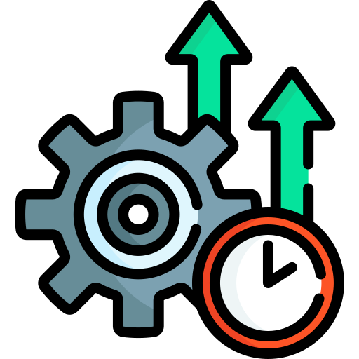

O teatro de produtividade é o esforço de parecer produtivo, em vez de de fato produzir. Inclui manter o status “online” o dia todo, responder mensagens na hora para mostrar presença e lotar a agenda de reuniões.